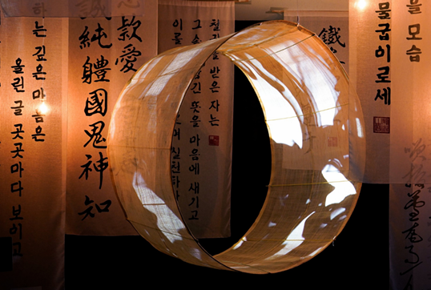
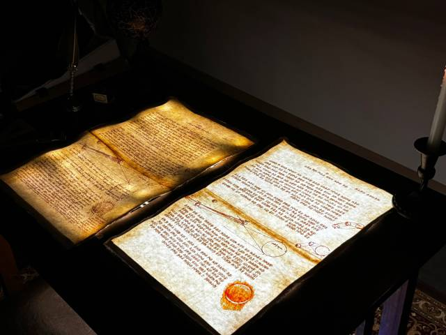

CAU 중앙대학교 가상융합대학
2026
Hungary MOME
SoundSphere
Project
hwhl02@naver.com
Hyerin Hwang
Media content production for exhibition spaces under the Korean Sport & Olympic Committee. Content produced included Large-scale screen visuals, Entrance LED display media, and Olympic highlight content.
At the Korea National Sports Talent Development Institute exhibition, I produced storytelling media about Olympic heroes. The project involved the entire pipeline from concept to final production. AI-generated music using Suno was also integrated.
VR Experience Inspired by Demon Slayer (귀멸의 칼날).
Users explore the Infinity Castle environment in VR from the perspective of a messenger crow. Created using Unreal Engine with Blueprint, Level Sequencer, and PCG Graph.
A cinematic video inspired by Kick Back by Kenshi Yonezu and the opening sequence of Chainsaw Man.
Created utilizing Unreal Engine cinematic rendering combined with After Effects motion graphics to achieve a highly stylized visual aesthetic.
A commercial project created using virtual production techniques for the brand Tamburins.
Unreal Engine was used to design the virtual environment before shooting. The final video combines AI generated visuals, Unreal Engine cinematic renders, and Live-action footage to create a cohesive commercial narrative.
AI-based typography media art project. This project trains AI on royal calligraphy from the Joseon Dynasty and expands those writing styles into modern Korean typography.
The generated typeface was presented as a projection mapping installation, visualizing the transformation of historical calligraphy into contemporary text. The artwork was projected onto a curved surface, requiring distortion-adjusted visuals to match the structure. The animation is synchronized with music to create a rhythmic visual experience.


Typography-based media art project inspired by the handwriting of Leonardo da Vinci.
By analyzing the structural characteristics of Da Vinci's writing, a Korean typeface was created. The animation visualizes the process of a codex being written. To enhance the experience, the projector was installed under the table so viewers could observe without blocking the projection.
Hyerin Hwang
Motion Graphics Designer / Media Artist
Major
Art & Technology
Interdisciplinary Major
Game Interactive Media
I am a media designer who creates visual experiences that make people stop and stay. When we visit exhibitions, there are always certain works that people stand in front of longer than others. I believe those works leave emotional impressions whether it is awe, comfort, empathy, or inspiration.
Through contents, I aim to create content that people do not simply watch, but experience within a space. I am particularly interested in immersive media and music-driven visual storytelling, combining technology and artistic direction to build engaging visual environments.
AI tools are occasionally used during the production process to help complete projects independently and expand visual possibilities.
Capstone Design Competition
Grand Prize
Hanium ICT Mentoring Competition
Award
Seoul Metro AI Art Competition
Award
TikTok AR Filter Makerthon
2nd Place
Daum Design Lab
Exhibition media content production for cultural spaces
DLG Law Firm
Video editing and marketing content production
Korea Creative Content Agency (KOCCA)
New Content Academy
- Immersive Space Major
- Virtual Production Minor
Chung-Ang University
Graduation Exhibition Design Team Director
2026 Hungary MOME
For the SoundSphere dome project, I would reinterpret the concept of creation inspired by The Creation of Adam by Michelangelo in a contemporary context.
Instead of depicting the traditional story of creation, the project explores creation in the age of artificial intelligence. Artificial intelligence, created by humans, now generates new images through technologies such as diffusion models.
This dome content would visualize a new form of creation emerging between humans and AI, transforming the iconic imagery into an immersive spatial experience.
I have experience in motion graphics, spatial media installation, Unreal Engine, and exhibition media production.
Through projection mapping projects using curved surfaces, I have developed an understanding of how visuals interact with physical space. These experiences allow me to design visual content that considers both the screen and the environment in which it exists.
For this project, I look forward to collaborating with international students, exchanging ideas, and exploring new creative approaches together. I believe this experience will help me grow further as a media artist while contributing my skills and enthusiasm to the team.